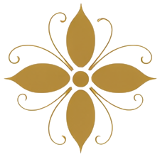
Психология
Аналитическая традиция: за каждым симптомом и сценарием — живая душа, у которой есть свой язык.
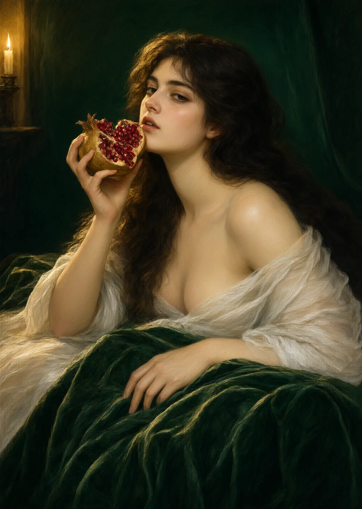
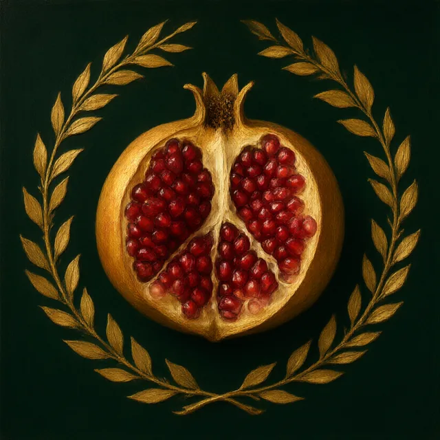
Женский опыт — через глубинную психологию, искусство, миф и живую личную историю.
Что это ? ↓Лаборатория феминности — содружество двух психологов. Мы создаём тихое творческое пространство, в котором разные грани женского естества — отношения, телесность, призвание — можно рассмотреть, назвать и бережно исцелить.
В основе встреч — сплав аналитической психологии, арт-терапии и сказкотерапии. Мы не учим «правильной женственности». Мы вместе смотрим, какой она оказывается у каждой.
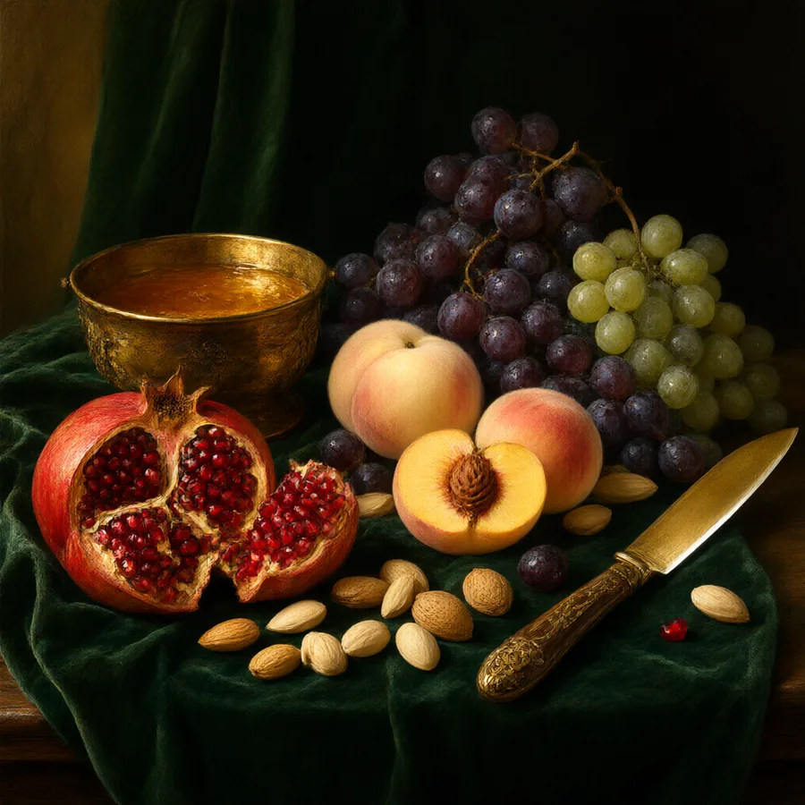
Почему нам интересно исследовать её сейчас? Потому что феминность не существует в единственном числе. Она складывается из множества образов, ролей, противоречий и личных историй — как спелый плод, в котором всегда есть и сладость, и терпкость.
Мы живём в время, когда старые рецепты «какой быть» больше не работают, а новые ещё не написаны. Это — свободное, но и тревожное место. Лаборатория — пространство, где его можно проживать не в одиночку.
Психология × миф × искусство × личный опыт

Аналитическая традиция: за каждым симптомом и сценарием — живая душа, у которой есть свой язык.
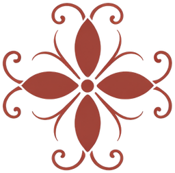
Сказки и мифы — старые карты женских путей. В них наши истории узнают себя и находят выход.
Арт-терапия и живопись: то, чему нет слов, может быть увидено, слеплено, написано — и изменено.
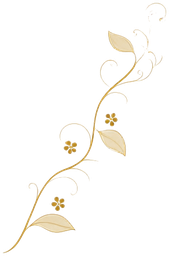
Никакой теории в отрыве от жизни: истории участниц — главный материал наших встреч.
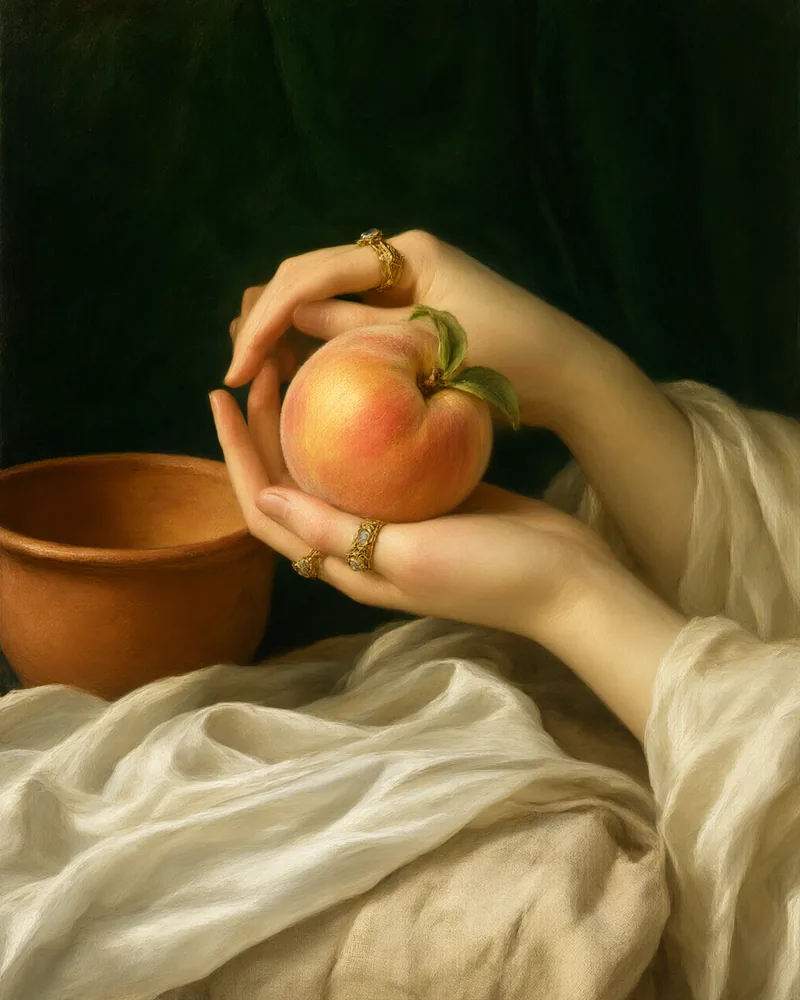
Это пространство — для женщин, которые:
Опыта в психологии не нужно — нужно только желание смотреть честно и мягко.
Кто создаёт лабораторию и из какой профессиональной оптики
Прошедшие, ближайшие и будущие исследования
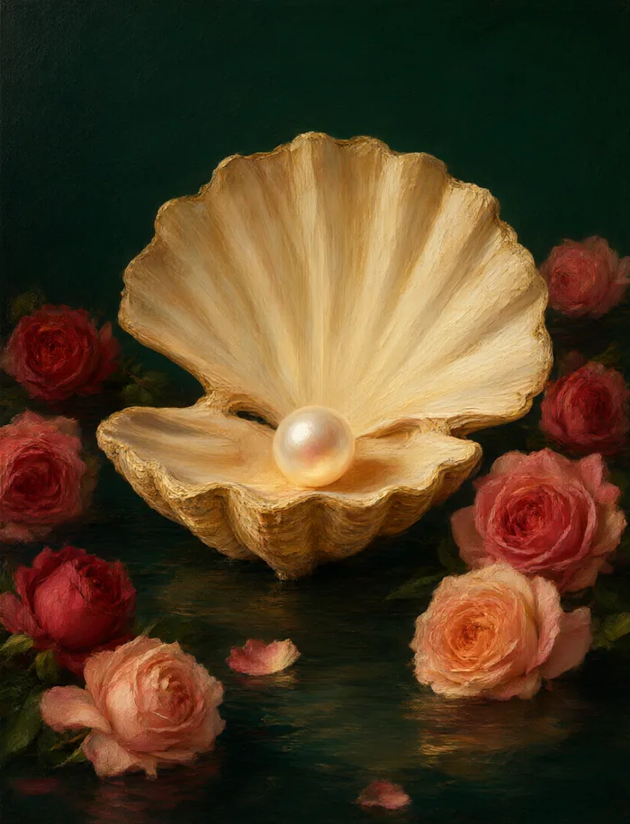
О чувственности, желании и женском либидо — о том, что делает женщину живой и тёплой.
О цикле→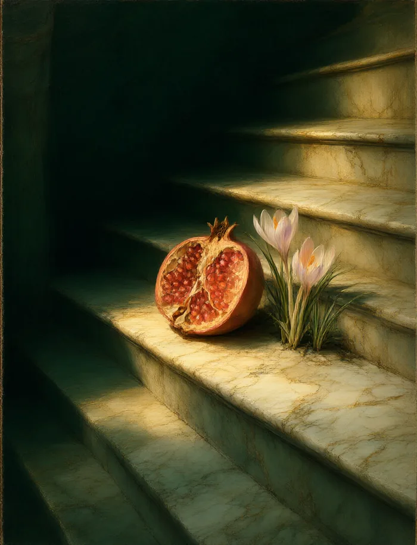
О спусках и возвращениях: как жить периоды тьмы и находить в них свою весну.
О цикле→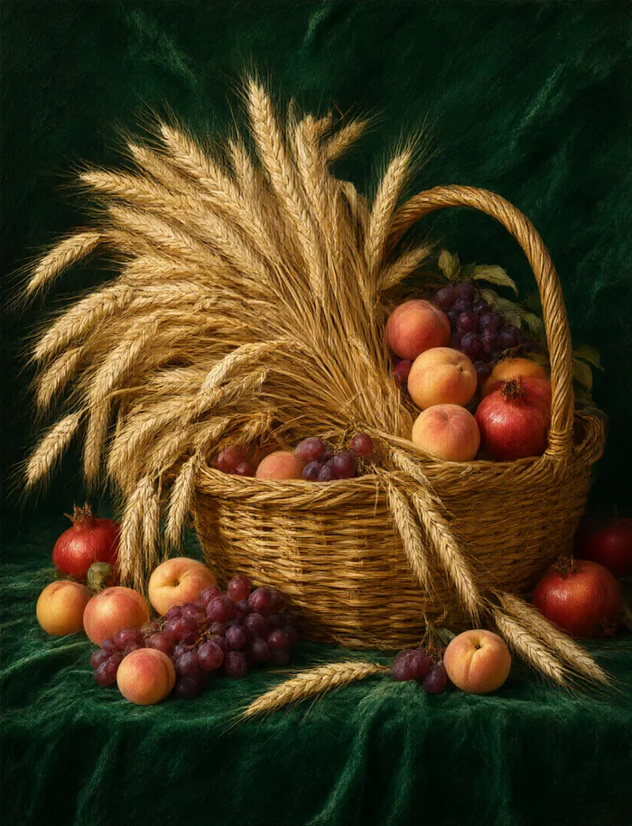
О материнстве и заботе — о том, как отдавать, не истощаясь, и оставаться собой.
О цикле→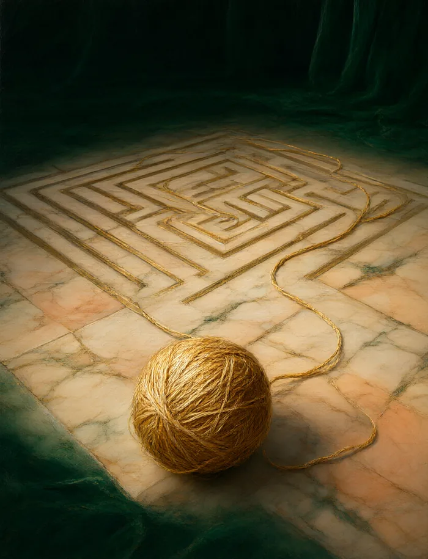
О выборе пути и своей нити: как не потеряться в лабиринте чужих ожиданий.
О цикле→Формат и практики
Малые группы — до десяти женщин. Встречи проходят в тёплом кругу, где можно говорить и молчать, не испытывая оценки.
Арт-терапия, работа со сказкой и мифом, телесные упражнения, письмо. Каждый цикл — своя история и свои материалы.
Встреча — раз в неделю, около двух с половиной часов. Цикл — несколько месяцев, чтобы изменения успели укорениться.
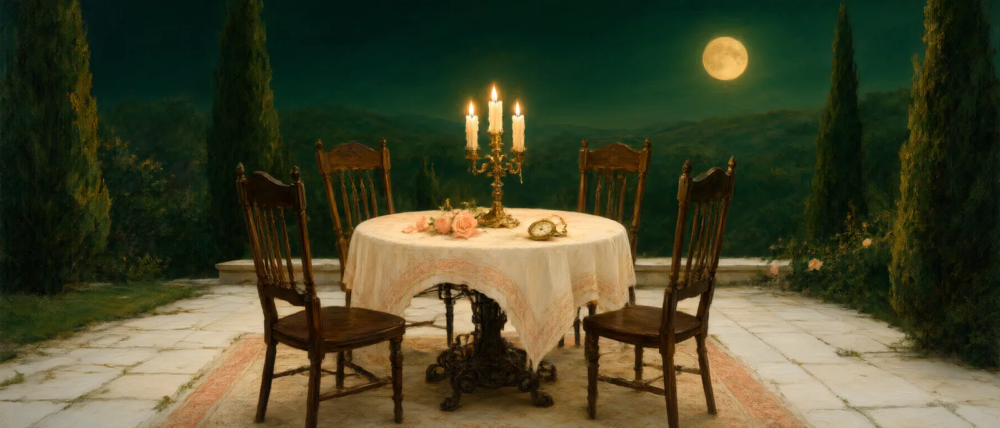
Ближайшая встреча — цикл «Венера». О её начале, датах и новых исследованиях мы пишем в наших новостях. Оставьте почту — и мы пригласим вас лично.
Спасибо. Мы напишем вам, когда откроется ближайшая встреча.
Вопросы и запись на консультации: hello@labfem.ru